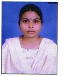

Mrs.K.Bhagya Laxmi
Lecturer
Department of Mathematics
MJPTBCW RESIDENTIAL DEGREE COLLEGE FOR WOMEN
Teaching
Mrs. K.Bhaga Laxmi holds Master's Degree in mathematics from Osmania University since 2005
passed AP State Eligibility Test in the year 2013
Also B.Ed from Osmania University. She has 16 years of teaching experience.
She worked as P.G college lecturer in Dhramavant P.G college for 3 years
as Asst. Professor in Vignan bharathi institute of technology and Nalla narsimha reddy group of institutions for 10 years
Later she joined Mahatma jyothi baphule residential institutions in 2018 as Trained Graduate Teacher for one year.She joined MJPTBCWRDC on 09.03.2019.